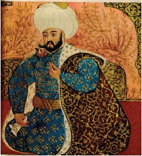

Fatih Sultan Mehmet
Fatih Sultan Mehmet tahta çıktığı zaman bir kuyrukluyıldız görülmüştü ve Papa o zaman yıldızı “Türk ve Müslüman dostu zındık yıldız” olarak aforoz etmişti. Sonradan, bu kuyrukluyıldızın Halley kuyrukluyıldızı olduğu öğrenildi. Balkan Harbi’nde (1912) Bulgarlar Çatalca’ya kadar ilerlerken Halley kuyrukluyıldızı yine görülmüştü. O zaman kilise adamları: “Türklerin uğur yıldızı göründü, Bulgarlar yine mağlup olacaklar!” demişti ve gerçekten de öyle oldu. Çatalca Muharebesi’ni kazandık, Balkanlı müttefikler arasına nifak girdi ve Edirne’yi Bulgarlar’dan geri aldık.